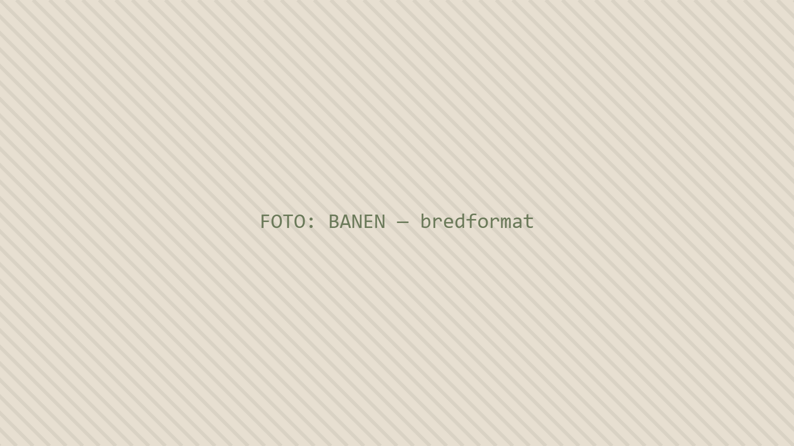
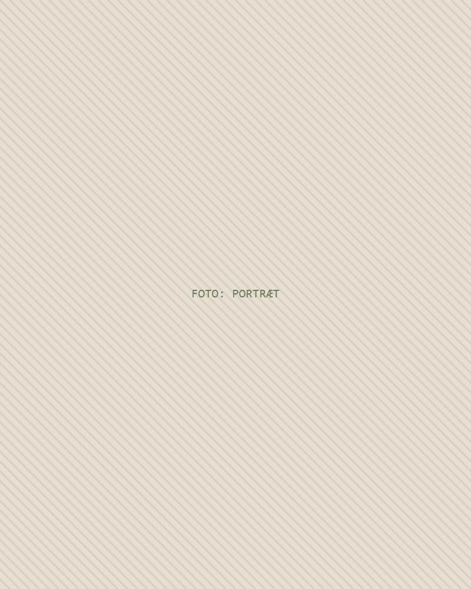
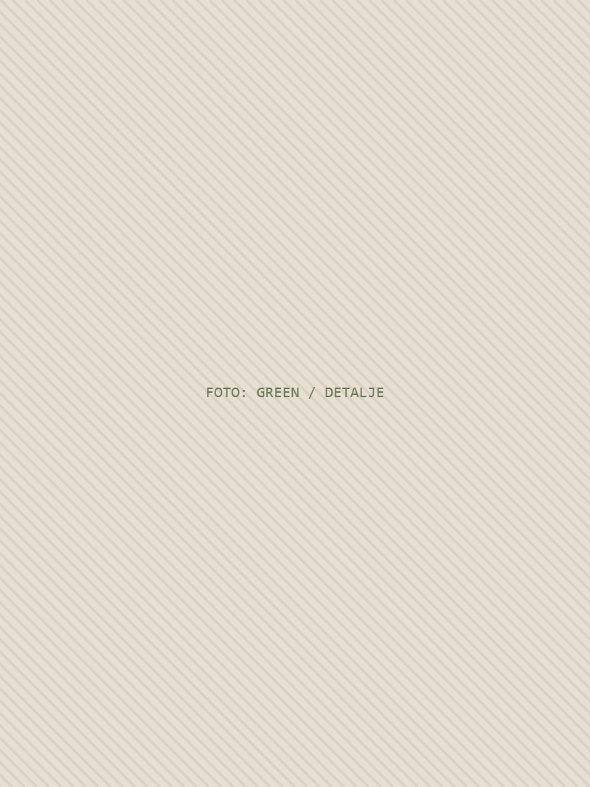
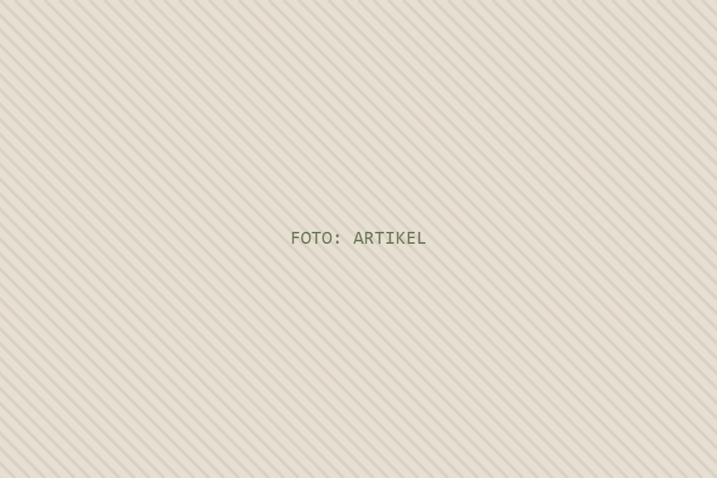

01
Agronomisk rådgivning
Uafhængig, objektiv vurdering af turfens sundhed, spillekvalitet og driftspraksis — med anbefalinger prioriteret efter, hvad der betyder mest først.

Uafhængig agronomisk golfrådgiver
Mere end tyve års praksis på en af Europas mest regulerede golfbaner, hvor en links-inspireret anlæg blev ført gennem en fuld omstilling til pesticidfri drift uden at gå på kompromis med spilbarheden. Uafhængig rådgivning fra praksis til klubber, der står foran samme rejse.
Profil
Royal Copenhagen Golf Club ligger i en fredet park på 1.400 hektar nord for København — et Natura 2000-habitat og UNESCO-verdensarv, delt med to tusinde dådyr og syv millioner besøgende om året. Da Martin Nilsson blev chefgreenkeeper i 2006, var opgaven fra bestyrelsen let at formulere og svær at levere: gør Skandinaviens ældste golfbane klar til en fremtid uden pesticider.
Det gjorde han over nitten år. Sidste fungicidbehandling blev udført i 2011. Poa-dominerede greens blev omlagt til rødsvingel og hundegræs gennem en disciplineret, links-inspireret drift med lave input; ikke-kemiske metoder til sygdomsbekæmpelse blev udviklet på banen og senere dokumenteret i forskning støttet af R&A og STERF. Spilbarheden blev helårlig, og klubben blev et referencested, som europæiske greenkeepere rejser for at se.
Arbejdet foregik under reelle begrænsninger: budgetter på 1–1,5 mio. euro, et team på fire til tolv, krav om at minimere vand og gødning, og løbende dialog med fredningsmyndigheder og miljømyndigheder. Det er grunden til, at rådgivningen er praktisk snarere end teoretisk. Martin arbejder i dag selvstændigt som sparringspartner for klubber, chefgreenkeepere og bestyrelser, der har brug for klare vurderinger af deres turfstrategi — og for en, der allerede har truffet de beslutninger, de står over for.

Kompetenceområder
Uafhængig, objektiv vurdering af turfens sundhed, spillekvalitet og driftspraksis — med anbefalinger prioriteret efter, hvad der betyder mest først.
Trinvis planlægning for klubber, der udfase plantebeskyttelsesmidler, sekventeret så banen forbliver spilbar undervejs.
Langsigtet retning for greens, fairways og teesteder: artsmål, inputniveauer og de beslutninger, der holder planen sammen.
Drift med lave input på sandbaserede og udsatte anlæg — vind, tørke og sæsonstress behandlet som designparametre, ikke problemer.
Integreret, overvejende ikke-kemisk bekæmpelse af sneskimmel, dollar spot og stressbetingede sygdomme via timing, fugt og næring.
Vandforsyning, jordstruktur, sandvalg og dræn vurderet som ét system — fundamentet for de fine græsser.
Praktisk omlægning til rødsvingel og hundegræs, inklusive risikoprofil og forventet tidslinje år for år.
Sæsonprogrammer, årlige evalueringer og flerårig optimering afstemt med budget og bemanding.
Objektiv rapportering til bestyrelser og udvalg, skrevet så den kan læses af både ikke-fagfolk og greenkeeperteams.
Overholdelse af miljølovgivning og habitatbeskyttelse oversat til konkret agronomisk praksis.
Erhvervserfaring
Royal Copenhagen Golf Club, Danmark
Med arkitekt Phillip Spogard (Spogard & Vandervaart). Opnåede myndighedsgodkendelse til at flytte beskyttede naturtyper — det første af sin art i Danmark — og muliggjorde anlæg inden for strenge fredningshensyn.
Planlægning og etablering af ny boring til bæredygtig vandforsyning.
Med arkitekt Tom Mackenzie (Mackenzie & Ebert). Planlægning og anlæg af forreste teesteder på seks huller.
Medlem af projektgruppen med arkitekt Tom Mackenzie (Mackenzie & Ebert) og entreprenør Frank Lowell. Renovering af alle 18 huller, herunder teesteder, bunkers og green-omgivelser.

Uddannelse
Greenkeeperuddannelsen, Danmark, 2001–2005
HA, erhvervsøkonomi, Copenhagen Business School, 1989–1992
Brancheledelse
Ud over banen har Martin i to årtier siddet i de rum, hvor standarder, lovgivning og forskningsprioriteter for greenkeeping fastlægges — fra nationale forhandlinger om EU’s direktiv om bæredygtig anvendelse af pesticider til europæisk forbunds- og forskningsarbejde.
Federation of European Golf Greenkeepers Associations.
FEGGA-repræsentant i European Golf Associations strategiske arbejdsgruppe.
Ni år i spidsen for den nationale forening.
DGA-repræsentant i forhandlinger med Miljøstyrelsen om national implementering.
Medlem af rådgivende udvalg, Scandinavian Turfgrass and Environment Research Foundation.
Taler ved konferencer og workshops i Skandinavien, Storbritannien, Frankrig, Tjekkiet og Holland; bidragyder til Greenkeeper International.
Udvalgt artikel

Skrevet til BIGGA’s Greenkeeper International på baggrund af et oplæg for den svenske greenkeeperforening. Artiklen beskriver, hvordan en næsten 100 år gammel bane holder turfen sund med minimale input: skiftet fra enårig rapgræs til rødsvingel, de grundvilkår svingel kræver, og de konkrete metoder — rytmen i topdressing, ingen efterårsbeluftning, tromling i stedet for klipning fra midt i oktober, 40–70 kg N om året, ingen fosfat — der gør det muligt.
“Død er en integreret del af vores drift. Noget græs må dø, for at svinglen kan brede sig og trives.”
Konklusionen er karakteristisk afmålt. Pesticidfri drift passer ikke til alle baner, og en omstilling fra dag til dag er den dårligste måde at forsøge det. “Succesraten afhænger af dine stedspecifikke forhold og dine ressourcer.” Formålet med at skrive den er ikke, at andre skal kopiere København, men at vise, at man kan optimere nedad uden at tabe kvalitet.
Læs artiklenTilgang
Naturen arbejder med dig, ikke mod dig — hvis du giver den tid.
At flytte en bane fra én ligevægt til en anden er en flerårig plan. Arbejdet ligger i at sekventere den, så klubben aldrig mister tilliden undervejs.
Størstedelen af turfgræsforskningen forudsætter konventionel drift. Råd til baner med lave input må komme fra baner, der faktisk drives sådan.
Bæredygtighed, der koster medlemmerne deres greens, er ikke bæredygtig. Kvalitet og lavere input forenes gennem timing, ikke kompromis.
Ingen produkter at sælge og ingen position at forsvare. Anbefalingen er den, banen og ressourcerne reelt kan bære.
Sygdomstryk og stressperioder håndteres med dømmekraft frem for refleks. Nogle dårlige uger er prisen for et bedre år.
Et netværk af ligesindede greenkeepere er værd mere end nogen enkelt ekspert. Tyve års sparring ligger bag hver anbefaling.
Kontakt
Rådgivningen begynder med et ærligt blik på banen, ressourcerne og ambitionerne — og fortsætter med råd, I kan handle på, i den rækkefølge de bør handles på.